Open Build & Problem-Solving.
Watch the Session
Dhwani RIS members only · ~60 minutes
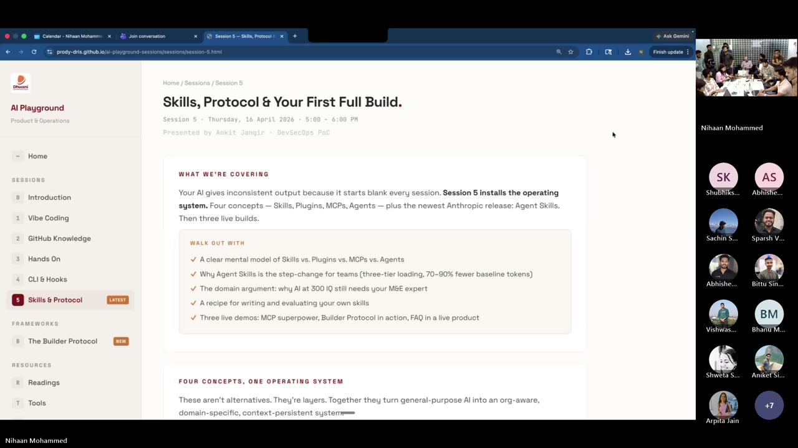
What Actually Happened
Five sessions in, and this one was the proof. Ankit walked the room through four concepts that run the AI stack — Skills, MCP, Plugins, Agents — in roughly seven minutes. Then three builders showed what they’d made with them. No slides of theory. No highlight reels. Real client work, real screens, real answers to the tough questions. Plus one live teaching moment from Abhinav on design as a skill — which turned out to be the rule of the hour.
You’ll walk away with
- A plain-language mental model of Skill vs. MCP vs. Plugin vs. Agent — and when to reach for each
- The four skill tiers (Foundation → Partner → Organisation → Team) and why Dhwani needs to build its own layer now
- Ravi’s timesheet + project-governance MCP — Microsoft 365 activity auto-posted into Frappe HRMS with no custom code
- Kashish’s ATMA Education Foundation build — CLI-zero to a full Frappe project with verticals, cohorts, web forms, and document review
- Arpita’s Welspun Help Center — org-level resources + role-gated FAQs inside a live mGrant deployment, installable in five minutes
- A teaching moment on why the
mGrant design system skillbelongs in every project MD by default
Opening — Why This Session
Nihaan opened with a candid recap. The first four sessions were about lowering the barrier — what is vibe coding, why GitHub matters, how to set up CLI, hooks, and security. The pattern he’d noticed: people were solving real problems in isolation. The point of this program is to drag those wins into the open.
This week’s shift: from “AI use” to “best AI use”. Most of the company uses Claude or ChatGPT through the UI. Far fewer use the CLI. And within the CLI, the difference between an average operator and a great one is the four concepts covered today.
The Four Concepts Ankit’s Explainer
Ankit’s framing, in plain language: AI is a smart assistant. The four concepts are four ways you extend that assistant. They are not alternatives — they are layers. Each one does one job, and together they turn a generic chatbot into an org-aware teammate.
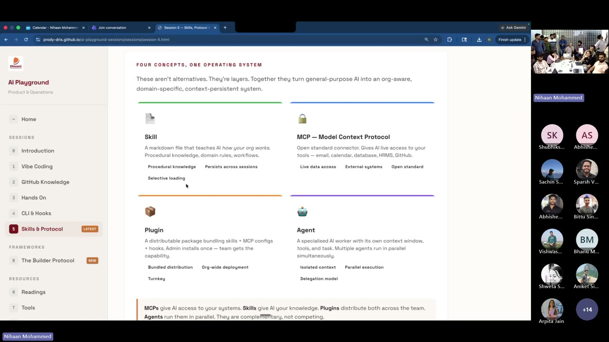
Nihaan’s one-liner to close the segment: “MCP gives access to your system. Skills give AI knowledge. You need both. Neither is better — they are complementary.”
The Four Skill Tiers — and Why Dhwani Needs Its Own
Ankit laid out three types of skills in the call; the fourth layer is the one that ties the stack together. A skill you stack at the top inherits everything below it. The more tiers active, the more context-aware your AI becomes on day one.
Your Team
All teams
Any org
Universal
“Today as an organisation we don’t have Dhwani-level engineering skills. We need them. Coding practices. Testing practices. The ask from this session is: let’s go back and build common skills, in one common place — GitHub — so Deepak’s coding skill, Anup’s coding skill, are all available to the rest of us.”
The invitation is explicit: if you’ve solved something with a skill, contribute it. The organisation tier of this pyramid is ours to fill.
Anatomy of a Skill
Ankit walked through what actually goes in a skill file. This matches the format Anthropic documents and what the Superpowers partner skills use.
Ankit’s honest note: “Skill banana is not a one-shot. You iterate. You train it. The first version will be wrong — that’s the point.”
Live Builds Three Spotlights
AI + skills + MCPs, applied to real client work already shipping. Watch for how each builder used different parts of the stack.
Ravi Jangir Flagship MCP Demo
The brief: stop hand-entering timesheets; stop pulling monthly project reviews by hand. What followed was a live Microsoft 365 ↔ Claude Code ↔ Frappe HRMS wire-up — no custom code, just existing APIs.
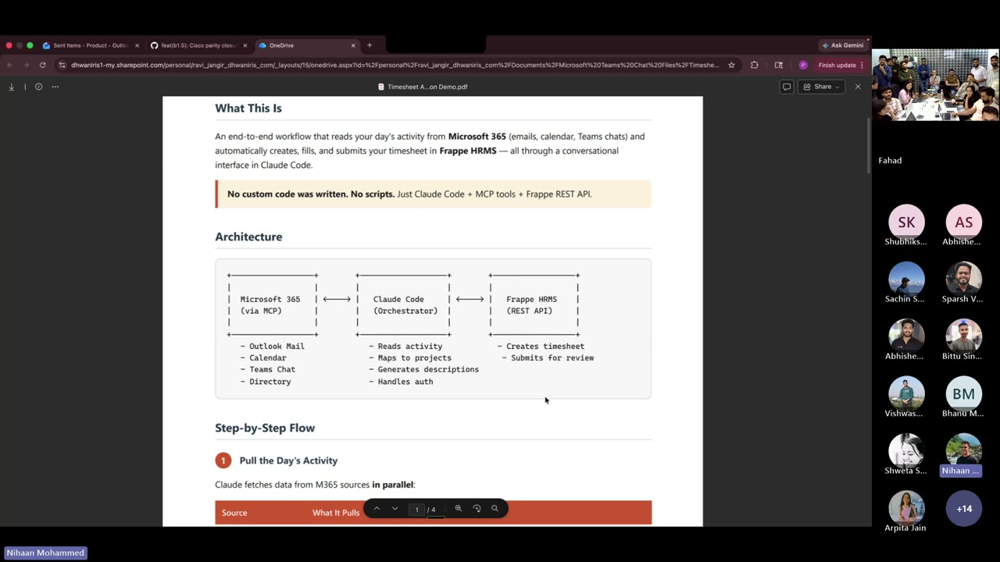
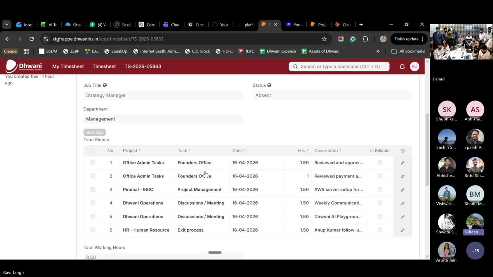
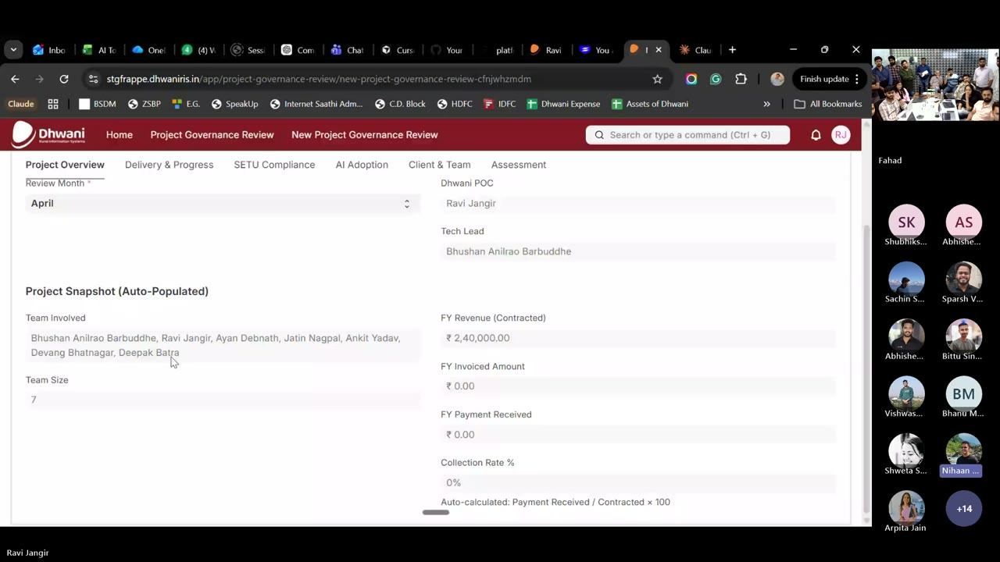
The Q&A that mattered
“Is our code being used to train the model if we log in with a personal account?” Ravi clarified: with the correct account setup — Dhwani’s Claude Team subscription — your code and prompts are not used for training. The CLI does not process your project data into a training pipeline by default. This is the right answer to give stakeholders who will ask the same thing.
What to steal from this build: the pattern is portable. If you have an internal system with a REST API and you live in Microsoft 365, you can collapse a recurring ops workflow into a two-minute Claude Code conversation. Timesheets is the hook. The real prize is any repeating admin task where the data already exists in two different systems.
Kashish Talwani Builder Protocol — ATMA
The honest version of “starting from zero.” Kashish had never used CLI before this engagement — Ankit and Nihaan handed her API keys, a dependency list, and a login page to build. She came back with the rest: verticals, cohorts, NGO partners, MIS admin, web forms, workflows, document review. FRD/BRD markdown straight into live Frappe staging.
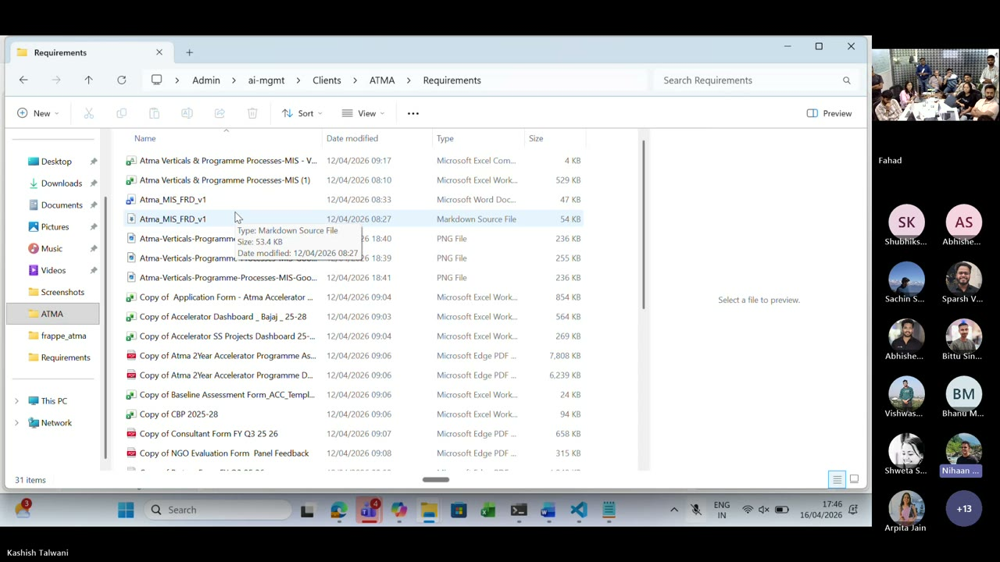
Requirements/ folder with the FRD in markdown and Word, reference images, and reference spreadsheets. Kashish gave AI the context before asking it to build.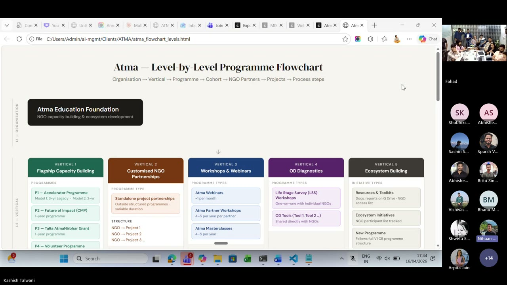
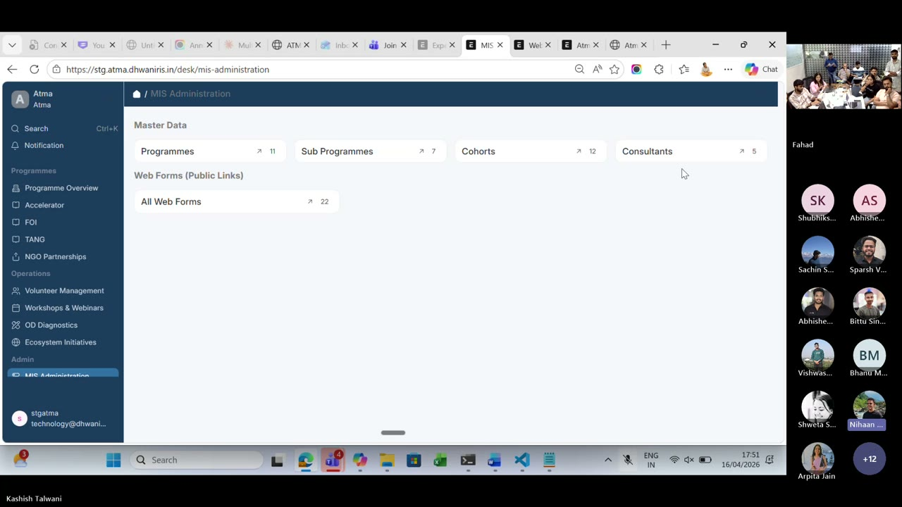
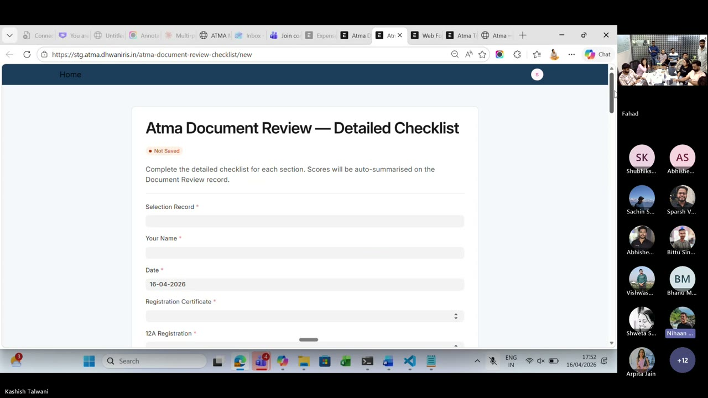
What changed between the start and the end
Memory as a folder, not a conversation. She used a HEARTBEAT.md + a memory store + a Requirements/ folder with the BRD and FRD in both markdown and Word. Module-wise fields, data types, options, doc references — all there before she asked AI to do anything.
Builder Protocol, lived. Not admired. She followed it. Theme → Form → Dashboard, with the FRD as the spec and the CLI as the builder.
Direct-to-staging deploys. API keys in the terminal, reference to staging, small iterative changes. No handoff to a dev for minor updates.
Credit given: Devang’s shared skill library was the reference that unblocked her. Skills as a library — the organisation tier — actually works when it exists.
The takeaway no one expected: the hard part was not the Frappe code. The hard part was writing the FRD well enough that AI could build from it. Once the spec is crisp, the build is cheap.
Arpita Jain Help Center — Welspun
The problem: clients had an org-level knowledge base need, but mGrant only had project-level file storage — manuals, field photos, creatives, FAQs all trapped inside individual projects. Arpita built the Help Center as a new module to fix that: Resources + FAQs, role-level visibility on folders and files, external link support.
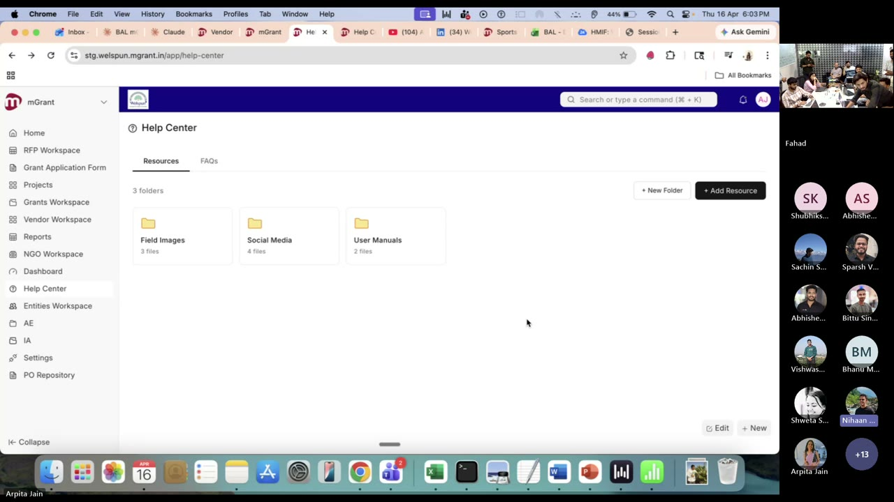
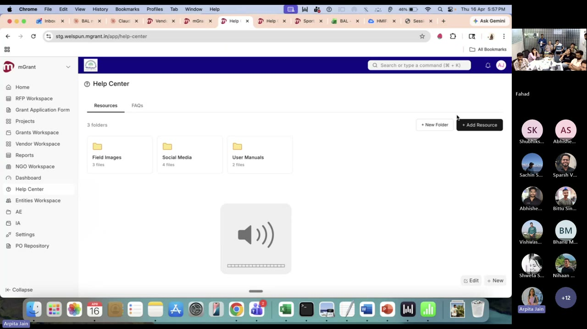
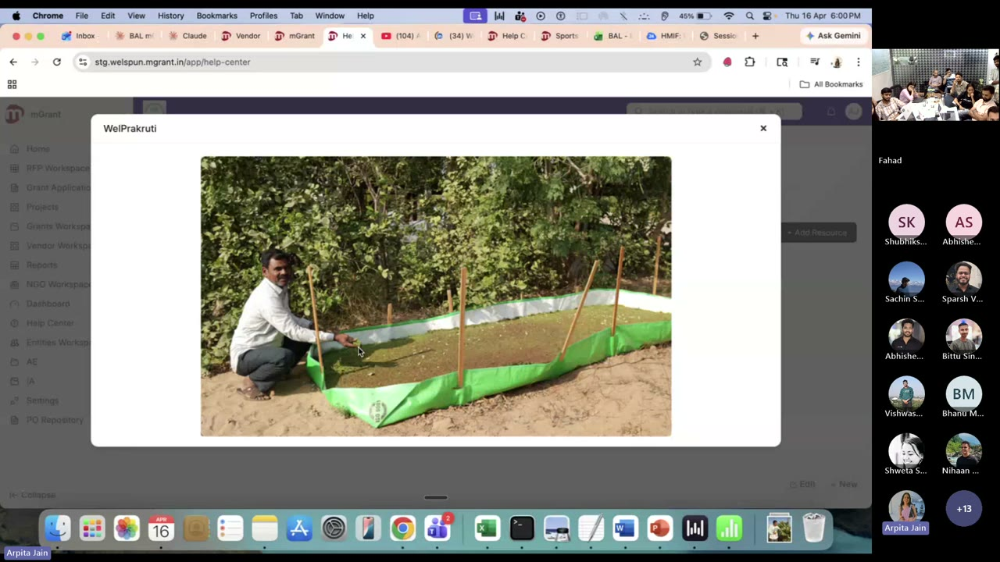
FAQs — the bit ticketing teams will love
User manuals drafted with Claude. Arpita generated the first pass of user manuals with Claude, then hand-edited. Those became the seed FAQs, each with screenshots.
Inter-page redirection baked in. An FAQ that mentions “My Organization” links straight into that page. “How do I navigate to projects?” goes to the Projects page. FAQs are a navigation layer, not just text.
Role-gated FAQs. “How do I delete a user” is visible only to Donor Admins — not to NGO or partner users. Same role model as Resources.
Ticketing future. When mGrant ticketing goes live, a raised ticket will first redirect the user to the related FAQs. Self-serve before human.
The deployment story: Welspun took the long way — real build, real iteration. The second client will take five minutes. All of it driven by an MD file that describes the organisation. This is what reusability looks like when the architecture is right from the start.
A Teaching Moment Live
“When you’re building on an mGrant surface, reference the mGrant design system skill in your project MD before you start. The skill already exists. Make it the default — don’t hand-roll UI from existing project pages when there’s an org-tier skill for the surface.”
Ninety seconds on the call, and the rule of the hour. Skills you don’t know about don’t throw errors — they just cause drift. By the time a reviewer notices, you’ve already shipped.
The rule, written down: if there’s a Dhwani org-tier skill for the surface you’re building on, reference it in your project MD before the first AI turn. This is precisely why an organisation-tier skill library matters — and why Session 6 picks up exactly where this leaves off.
Key Takeaways
Four concepts, one stack. Skill = knowledge. MCP = access. Plugin = bundled install. Agent = orchestration. Ship them together, not separately.
Dhwani needs its own organisation-tier skill library on GitHub. Coding hygiene, testing standards, design system, domain rules. If you solved it once — contribute the skill. This was the single biggest ask from the room.
MCP + existing APIs beat writing new code. Ravi built a production-grade timesheet + governance workflow with no custom code. The win comes from connecting what already exists, not building new services.
Spec quality sets build speed. Kashish’s hardest work was writing the FRD/BRD well. Once the spec was crisp, Frappe scaffolding was cheap. The AI executes; you architect.
Reusability is an architecture choice, not an afterthought. Arpita’s Help Center was slow for Welspun and instant for the next client because the module was designed to configure from an MD file, not hand-coded per customer.
If there’s a skill for your surface, reference it in your MD. Missing skills don’t error — they just drift. The design-system teaching moment made this rule concrete.
Your code is not training the model. With the Dhwani Claude Team subscription, your prompts and code stay yours. Say that explicitly to anyone in your project team who asks.
Further Reading
Published the same day as this session. Practical guide to /rewind, /compact, fresh sessions, and subagents now that Claude Code has a 1M token context window. Directly useful for anyone now using CLI long-running sessions — which, after this week, is most of you.
The official post on Agent Skills. Three-tier progressive loading, why it changes token economics at org scale.
The open standard that made Ravi’s Microsoft 365 ↔ Claude Code ↔ Frappe HRMS wiring possible. Read the servers section to see what’s already available.
Free course from Anthropic on writing your first skill. Start here if the anatomy section above was the part that clicked for you.
Practical decision framework when you’re unsure which of the four concepts to reach for. Short. Concrete.